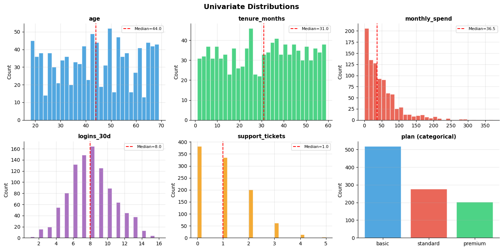
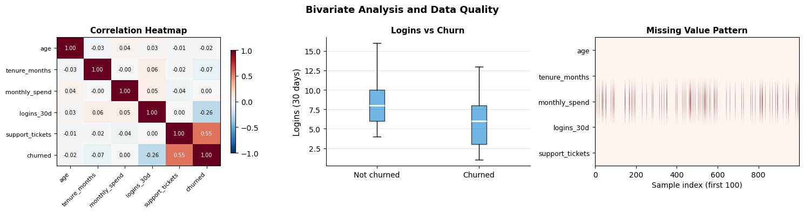
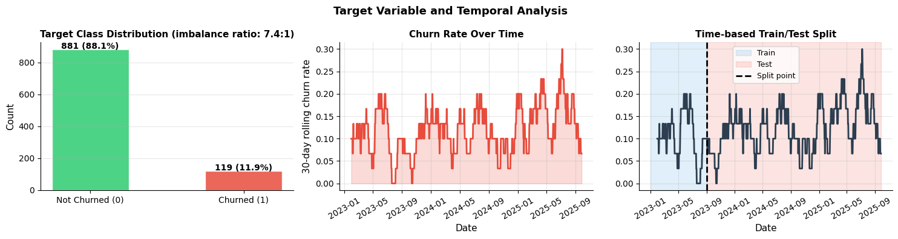

How do you explore and understand your data?#
Topics: EDA Framework · Univariate Analysis · Bivariate Analysis · Temporal Analysis · Target Analysis · Data Quality Checklist
1. EDA Framework#
What it is#
Systematic exploration of a dataset before any modeling
Goal: understand the data, find problems, generate hypotheses
EDA is never skipped — surprises in EDA prevent surprises in production
EDA sequence#
Shape and types — how many rows, columns, data types
Missing values — where, how much, pattern
Distributions — univariate, detect outliers
Relationships — bivariate, correlations
Target variable — distribution, class balance
Temporal patterns — trends, seasonality (if time-based)
Data quality — duplicates, invalid values, leakage signals
Gotchas#
EDA is iterative — findings in step 4 send you back to step 2
Document findings as you go — you will forget
Share EDA findings with domain experts before modeling
import pandas as pd
import numpy as np
import matplotlib.pyplot as plt
import matplotlib.gridspec as gridspec
import warnings
warnings.filterwarnings('ignore')
np.random.seed(42)
n = 1000
# Synthetic user churn dataset
df = pd.DataFrame({
'user_id' : range(n),
'age' : np.random.randint(18, 70, n),
'tenure_months' : np.random.randint(1, 60, n),
'monthly_spend' : np.random.exponential(50, n).round(2),
'logins_30d' : np.random.poisson(8, n),
'support_tickets': np.random.poisson(1, n),
'plan' : np.random.choice(['basic', 'standard', 'premium'], n, p=[0.5, 0.3, 0.2]),
'churned' : np.random.binomial(1, 0.15, n),
})
# Introduce missing values
df.loc[np.random.choice(n, 80, replace=False), 'monthly_spend'] = np.nan
df.loc[np.random.choice(n, 30, replace=False), 'age'] = np.nan
# Introduce duplicate
df = pd.concat([df, df.iloc[:5]], ignore_index=True)
print("=== Basic Info ===")
print(f"Shape: {df.shape}")
print(f"Dtypes:")
print(df.dtypes)
print(f"Missing values:")
print(df.isnull().sum()[df.isnull().sum() > 0])
print(f"Duplicates: {df.duplicated().sum()}")
print(df.describe().round(2))
=== Basic Info ===
Shape: (1005, 8)
Dtypes:
user_id int64
age float64
tenure_months int64
monthly_spend float64
logins_30d int64
support_tickets int64
plan object
churned int64
dtype: object
Missing values:
age 30
monthly_spend 80
dtype: int64
Duplicates: 5
user_id age tenure_months monthly_spend logins_30d \
count 1005.00 975.00 1005.00 925.00 1005.00
mean 497.02 43.75 30.65 51.25 7.90
std 290.22 15.00 17.00 51.81 2.63
min 0.00 18.00 1.00 0.16 1.00
25% 246.00 31.00 16.00 14.53 6.00
50% 497.00 44.00 31.00 36.60 8.00
75% 748.00 56.00 45.00 69.25 10.00
max 999.00 69.00 59.00 372.09 16.00
support_tickets churned
count 1005.00 1005.00
mean 1.00 0.16
std 1.01 0.36
min 0.00 0.00
25% 0.00 0.00
50% 1.00 0.00
75% 2.00 0.00
max 5.00 1.00
import pandas as pd
import numpy as np
import matplotlib.pyplot as plt
import warnings
warnings.filterwarnings('ignore')
np.random.seed(42); n = 1000
df = pd.DataFrame({
'age' : np.random.randint(18, 70, n),
'tenure_months' : np.random.randint(1, 60, n),
'monthly_spend' : np.random.exponential(50, n).round(2),
'logins_30d' : np.random.poisson(8, n),
'support_tickets': np.random.poisson(1, n),
'plan' : np.random.choice(['basic','standard','premium'], n, p=[0.5,0.3,0.2]),
'churned' : np.random.binomial(1, 0.15, n),
})
df.loc[np.random.choice(n, 80, replace=False), 'monthly_spend'] = np.nan
num_cols = ['age', 'tenure_months', 'monthly_spend', 'logins_30d', 'support_tickets']
# Univariate distributions
fig, axes = plt.subplots(2, 3, figsize=(14, 7))
axes = axes.flat
colors = ['#3498DB','#2ECC71','#E74C3C','#9B59B6','#F39C12']
for i, (col, color) in enumerate(zip(num_cols, colors)):
axes[i].hist(df[col].dropna(), bins=30, color=color, alpha=0.85, edgecolor='white')
axes[i].set_title(col, fontsize=11, fontweight='bold')
axes[i].set_ylabel('Count'); axes[i].grid(True, alpha=0.3)
axes[i].spines['top'].set_visible(False); axes[i].spines['right'].set_visible(False)
axes[i].axvline(df[col].median(), color='red', linewidth=1.5, linestyle='--', label=f'Median={df[col].median():.1f}')
axes[i].legend(fontsize=8)
# Categorical
plan_counts = df['plan'].value_counts()
axes[5].bar(plan_counts.index, plan_counts.values, color=['#3498DB','#E74C3C','#2ECC71'], alpha=0.85, edgecolor='white')
axes[5].set_title('plan (categorical)', fontsize=11, fontweight='bold')
axes[5].set_ylabel('Count'); axes[5].grid(True, alpha=0.3, axis='y')
axes[5].spines['top'].set_visible(False); axes[5].spines['right'].set_visible(False)
plt.suptitle('Univariate Distributions', fontsize=14, fontweight='bold')
plt.tight_layout()
plt.savefig('eda_univariate.png', dpi=120, bbox_inches='tight')
plt.show()

import pandas as pd
import numpy as np
import matplotlib.pyplot as plt
import warnings
warnings.filterwarnings('ignore')
np.random.seed(42); n = 1000
df = pd.DataFrame({
'age' : np.random.randint(18, 70, n).astype(float),
'tenure_months' : np.random.randint(1, 60, n).astype(float),
'monthly_spend' : np.random.exponential(50, n).round(2),
'logins_30d' : np.random.poisson(8, n).astype(float),
'support_tickets': np.random.poisson(1, n).astype(float),
'churned' : np.random.binomial(1, 0.15, n),
})
# Make churn correlated with logins and support tickets
df['churned'] = ((df['logins_30d'] < 4) | (df['support_tickets'] > 2)).astype(int)
df.loc[np.random.choice(n, 80, replace=False), 'monthly_spend'] = np.nan
num_cols = ['age','tenure_months','monthly_spend','logins_30d','support_tickets']
fig, axes = plt.subplots(1, 3, figsize=(15, 4))
# Correlation heatmap
corr = df[num_cols + ['churned']].corr()
im = axes[0].imshow(corr.values, cmap='RdBu_r', vmin=-1, vmax=1, aspect='auto')
axes[0].set_xticks(range(len(corr))); axes[0].set_yticks(range(len(corr)))
axes[0].set_xticklabels(corr.columns, rotation=45, ha='right', fontsize=8)
axes[0].set_yticklabels(corr.columns, fontsize=8)
axes[0].set_title('Correlation Heatmap', fontsize=11, fontweight='bold')
plt.colorbar(im, ax=axes[0], shrink=0.8)
for i in range(len(corr)):
for j in range(len(corr)):
axes[0].text(j, i, f'{corr.values[i,j]:.2f}', ha='center', va='center', fontsize=7,
color='white' if abs(corr.values[i,j]) > 0.5 else 'black')
# Target vs numerical (boxplot)
churned_0 = df[df['churned']==0]['logins_30d'].dropna()
churned_1 = df[df['churned']==1]['logins_30d'].dropna()
axes[1].boxplot([churned_0, churned_1], labels=['Not churned', 'Churned'],
patch_artist=True,
boxprops=dict(facecolor='#3498DB', alpha=0.7),
medianprops=dict(color='white', linewidth=2))
axes[1].set_ylabel('Logins (30 days)', fontsize=11)
axes[1].set_title('Logins vs Churn', fontsize=11, fontweight='bold')
axes[1].grid(True, alpha=0.3, axis='y')
axes[1].spines['top'].set_visible(False); axes[1].spines['right'].set_visible(False)
# Missing value heatmap
missing = df[num_cols].isnull()
axes[2].imshow(missing.values.T, cmap='Reds', aspect='auto')
axes[2].set_yticks(range(len(num_cols))); axes[2].set_yticklabels(num_cols, fontsize=9)
axes[2].set_xlabel('Sample index (first 100)', fontsize=10)
axes[2].set_title('Missing Value Pattern', fontsize=11, fontweight='bold')
plt.suptitle('Bivariate Analysis and Data Quality', fontsize=13, fontweight='bold')
plt.tight_layout()
plt.savefig('eda_bivariate.png', dpi=120, bbox_inches='tight')
plt.show()
print("EDA complete — key findings should be documented before modeling")

EDA complete — key findings should be documented before modeling
2. Target Variable & Temporal Analysis#
Target variable analysis#
Always plot the distribution of what you are predicting
Check class imbalance — affects metric choice and modeling strategy
Check if target is contaminated (data leakage)
Temporal analysis#
Plot metrics over time — trends, seasonality, anomalies
Check if your train/test split respects time (no future leakage)
Look for regime changes — did something change in the data collection?
Data quality checklist#
Duplicates removed
Schema consistent (dtypes correct)
No impossible values (age = -5, spend = 1e12)
No leakage features (features computed after the target event)
Train/val/test split is stratified or time-aware
Interview Q&A#
What is target leakage?
A feature that is causally downstream of the target — computed using information from after the event
Example: ‘cancellation_date’ as a feature when predicting churn — the model learns a perfect rule but fails in production
Detection: suspiciously high feature importance for one feature, perfect train score
How do you handle class imbalance?
First: check if it’s actually a problem (precision/recall matter more than accuracy)
Options: class_weight=’balanced’, oversampling (SMOTE), undersampling, threshold tuning
Do NOT oversample before splitting — only on train set
Gotchas#
EDA on the full dataset before train/test split can leak information — be careful with what you compute
Time-series data: NEVER shuffle before splitting — use time-based split
import pandas as pd
import numpy as np
import matplotlib.pyplot as plt
import warnings
warnings.filterwarnings('ignore')
np.random.seed(42); n = 1000
dates = pd.date_range('2023-01-01', periods=n, freq='D')
trend = np.linspace(0, 0.05, n)
seasonal = 0.03 * np.sin(2 * np.pi * np.arange(n) / 30)
churn_prob = np.clip(0.10 + trend + seasonal + np.random.randn(n)*0.02, 0, 1)
df = pd.DataFrame({'date': dates, 'churned': np.random.binomial(1, churn_prob)})
fig, axes = plt.subplots(1, 3, figsize=(15, 4))
# Class distribution
counts = df['churned'].value_counts()
bars = axes[0].bar(['Not Churned (0)', 'Churned (1)'], counts.values,
color=['#2ECC71','#E74C3C'], alpha=0.85, edgecolor='white', width=0.5)
axes[0].set_ylabel('Count', fontsize=11)
axes[0].set_title(f'Target Class Distribution (imbalance ratio: {counts[0]/counts[1]:.1f}:1)', fontsize=11, fontweight='bold')
axes[0].grid(True, alpha=0.3, axis='y')
axes[0].spines['top'].set_visible(False); axes[0].spines['right'].set_visible(False)
for bar, val in zip(bars, counts.values):
axes[0].text(bar.get_x()+bar.get_width()/2, bar.get_height()+5,
f'{val:,} ({val/n:.1%})', ha='center', fontsize=10, fontweight='bold')
# Churn rate over time (rolling 30d)
df_time = df.set_index('date')
rolling_churn = df_time['churned'].rolling(30).mean()
axes[1].plot(df_time.index, rolling_churn, color='#E74C3C', linewidth=2)
axes[1].fill_between(df_time.index, rolling_churn, alpha=0.2, color='#E74C3C')
axes[1].set_xlabel('Date', fontsize=11); axes[1].set_ylabel('30-day rolling churn rate', fontsize=11)
axes[1].set_title('Churn Rate Over Time', fontsize=11, fontweight='bold')
axes[1].grid(True, alpha=0.3)
axes[1].spines['top'].set_visible(False); axes[1].spines['right'].set_visible(False)
axes[1].tick_params(axis='x', rotation=30)
# Train/test split visualization
train_end = pd.Timestamp('2023-09-01')
axes[2].axvspan(df_time.index[0], train_end, alpha=0.15, color='#3498DB', label='Train')
axes[2].axvspan(train_end, df_time.index[-1], alpha=0.15, color='#E74C3C', label='Test')
axes[2].plot(df_time.index, rolling_churn, color='#2C3E50', linewidth=2)
axes[2].axvline(train_end, color='black', linewidth=2, linestyle='--', label='Split point')
axes[2].set_title('Time-based Train/Test Split', fontsize=11, fontweight='bold')
axes[2].set_xlabel('Date', fontsize=11); axes[2].legend(fontsize=9)
axes[2].grid(True, alpha=0.3)
axes[2].spines['top'].set_visible(False); axes[2].spines['right'].set_visible(False)
axes[2].tick_params(axis='x', rotation=30)
plt.suptitle('Target Variable and Temporal Analysis', fontsize=13, fontweight='bold')
plt.tight_layout()
plt.savefig('eda_target_temporal.png', dpi=120, bbox_inches='tight')
plt.show()
